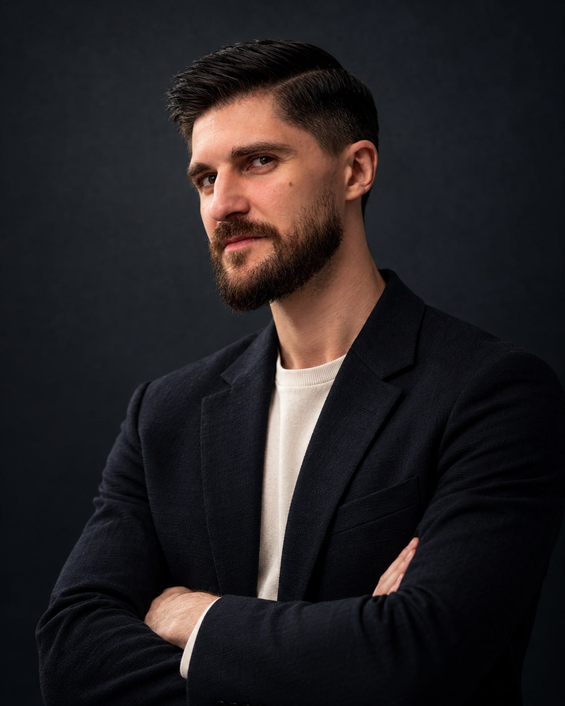

БЭТ+ · A2+ · САМОСТОЯТЕЛЬНОИврит
Иврит
без зажимов
Связывай мысли, заполняй паузы и мягко выражай несогласие.
59 ₪Практикум для самостоятельной работыЧто внутриЯ Андрей Фриман — преподаватель иврита, полиглот, автор проектов, курсов и обучающего подкаста для продвинутых уровней. Помогаю продолжающим понимать живую речь, этимологию и историю языка и свободно выражать свои мысли на иврите, в любой теме.

Самостоятельно, один на один
или в компании единомышленников.
Связывай мысли, заполняй паузы и мягко выражай несогласие.
59 ₪Практикум для самостоятельной работыЧто внутриВыпуски, практика и закрытый чат с моей личной обратной связью на иврите.
250 ₪1 месяц · 3 месяца — 650 ₪О проектеЛичная система обучения: сопровождение, кабинет, интерактив и мои авторские материалы.
от 800 ₪4 занятия в месяц · 45 или 60 минутВыбрать занятияОбсуждаем темы подкастов в группе своего уровня. По 6 участников.
100 ₪За онлайн-встречу · 60 минутО будущем клубевыражения, которые
соединяют твои мысли
Для уровня бэт+ (ориентир A2+) — когда базовая грамматика уже знакома, а речь хочется сделать богаче и естественнее. Учимся выигрывать время на раздумья, вежливо возражать и переходить от одной мысли к другой.
Оформление и оплата через Tribute в Telegram.
Живой проект с моим личным участием. Три новых выпуска в месяц и материалы для глубокой работы с каждым. Слушай, разбирай язык и практикуй речь — я рядом в закрытом чате.
Послушать демо-выпускСлушай выпуск или смотри, опираясь на субтитры.
Оригинальный текст на иврите и адаптированный перевод на русский.
Повторяй и закрепляй лексику выпуска.
Проверяй, насколько хорошо понял услышанное.
Проработка всей лексики, синтаксиса и грамматики. Голосовые задания — для практики в закрытом чате.
Я присутствую в чате и лично отвечаю на все вопросы, в том числе на голосовые участников. Даю обратную связь на иврите.
Доступ ко всем выпускам, материалам и закрытому чату с моим личным участием на срок подписки. Выбирай удобный период — состав одинаковый.
Беру продолжающих — от бэт до hэй (ב–ה, ориентир A2–C1). Встречаемся один на один онлайн в Zoom: работаем с твоим текущим уровнем, развиваем речь и разбираем то, что пока мешает двигаться дальше.
CEFR — ориентир. Твой уровень уточним по речи и задачам.
Личное сопровождение, кабинет с упражнениями и интерактив на моих материалах.
4 занятия в месяц · 45 минут
200 ₪ за занятие
Обсудить занятия8 занятий в месяц · 45 минут
180 ₪ за занятие
Обсудить занятияОнлайн в Zoom · Материалы включены · Оформление и оплата через Tribute
Сначала обсудим твои задачи и удобное время в Telegram. Затем оформим выбранный пакет через Tribute.
Онлайн-встречи на темы подкастов Фримана: делимся мнениями, обсуждаем услышанное и практикуем живую речь. Встречаемся один раз в неделю, в группе своего уровня.
Клуб пока планируется. Напиши свой уровень — обсудим участие и запуск группы.
Андрей очень профессиональный преподаватель, легко находит правильный подход к ученикам!
До того, как судьба свела меня с Андреем, у меня было много безуспешных попыток заговорить и разговориться. Я прошла ульпан бесплатный, ульпан платный, несколько частных преподавателей и тд Мне нравится модель преподавания, сочетающая и грамматические практики и разговорные, структурированное и логическое объяснение всего, включая танахический иврит. За пару месяцев-я говорю, начала читать Тору ( кто бы мог подумать) и почувствовала « легкость бытия в Иврите» Андрей очень профессиональный преподаватель, легко находит правильный подход к ученикам!
Материал очень структурирован. Садись и учись. Это очень экономит время.
Я давно искала подкасты для обучения ивриту. И вот сейчас могу сказать, что нашла. Что очень удобно на мой взгляд. Вы получаете аудиоматериал сразу с переводом и словарем. Материал очень структурирован. Садись и учись. Это очень экономит время. Кроме того темы интересные. А когда интересно, то и запоминаешь быстрее и прочнее. Одна досада у меня, если бы можно было не идти на работу, а сидеть и заниматься по этому материалу, в удовольствие, не спеша. Очень рекомендую эти уроки всем, кто любит заниматься ивритом!
Особенно нравятся выпуски, где лексика объясняется через контекст.
Подкаст «Фриман» слушаю второй месяц. Пришла с уровнем где то около бет и сначала было немного сложно, но синхронные субтитры в видео реально помогают. Можно слушать и одновременно видеть структуру фраз. Особенно нравятся выпуски, где лексика объясняется через контекст. Сейчас подписка на 3 месяца.
Его уроки никогда не бывают скучными: он интересно рассказывает об истории языка, грамматике и многом другом.
Андрей — замечательный учитель, он отлично умеет работать как со взрослыми учениками, так и с детьми. Благодаря ему мои дети полюбили язык и не боятся на нём разговаривать, и у меня тоже заметен значительный прогресс. Наравне с традиционными материалами, Андрей использует в работе и современные методы: кино, музыку, подкасты, стендап. Его уроки никогда не бывают скучными: он интересно рассказывает об истории языка, грамматике и многом другом. Андрей отзывчивый и тёплый преподаватель, к нему можно обратиться с вопросом в любой момент и гарантированно будет ответ.
Одним словом - лучший преподаватель с потрясающим, уникальным подходом к обучению.
До наших занятий я даже не представлял, что могу настолько быстро и качественно усваивать иврит. Я рассказал о своей цели, и учебный курс был построен ровно на том, что мне нужно знать, ничего лишнего, всё чётко и структурированно. Каждое занятие я приходил и знал, что у нас будет новый подготовленный материал: текст, вопросы для обсуждения, упражнения, карточки со всеми словами, которые я не знал, видео для просмотра, и всё это индивидуально. У меня было буквально всё, чтобы учиться, и я чувствовал, что мы оба хотим моего прогресса и успеха в изучении иврита. Я пришёл с уровнем, на котором мог немного разговаривать, и уже через полгода я смотрю видео из университета по высшей математике и ловлю себя на мысли, что мне ничего не нужно переводить, это потрясающее чувство! Одним словом - лучший преподаватель с потрясающим, уникальным подходом к обучению.
Плюс Андрей знает много вещей про сленг и уличную речь, поэтому есть возможность выучить те слова, которые в ульпане не дают)
Мне очень нравятся занятия с Андреем, для меня главной целью было разговориться на иврите после окончания ульпана, поэтому наши занятия в основном сконцентрированы на устной речи, и я в сочетании с постоянными попытками говорить на иврите с людьми на улице чувствую большие улучшения за несколько месяцев, речь стала проще, и много слов гораздо быстрее приходят в голову, чем раньше. Плюс Андрей знает много вещей про сленг и уличную речь, поэтому есть возможность выучить те слова, которые в ульпане не дают)
Очень его рекомендую с ним легко, нет скованности, он доступно объясняет материал, эмпатия чувствуется на всех уровнях🥰
Итак, хочу написать отзыв о прекрасном учителе, Андрее. Его я случайно увидела на фейсбук, и мне откликнулось его объявление о обучении ивриту. Я как раз только переехала в Израиль и хотела выучить язык. Я написала Андрею свой запрос, примерно как бы я хотела начать изучение языка и он меня поддержал, мы начали занятия. На уроках было очень легко, не смотря на то что я тупила))) и чувствовала себя как будто я в первом классе и плюс не очень прилежная ученица, Андрей подбадривал меня и помогал. Спасибо ему за это огромное❤️🤗 Очень его рекомендую с ним легко, нет скованности, он доступно объясняет материал, эмпатия чувствуется на всех уровнях🥰
Благодаря его терпению и индивидуальному подходу, я намного продвинулась в изучении иврита.
Хочу выразить огромную благодарность моему учителю иврита @Andreas_Free . Он профессионал своего дела, объясняет материал доступно и понятно, а уроки всегда проходят интересно и насыщенно, у меня был экспресс курс, много информации за короткий срок! Благодаря его терпению и индивидуальному подходу, я намного продвинулась в изучении иврита. Уроки не только информативны, но и мотивируют к дальнейшему изучению. Очень рекомендую его как преподавателя иврита! 😊
Очень нравится, что темы не поверхностные и язык не упрощенный.
Слушаю подкаст «Фриман» уже пятый месяц. Очень нравится, что темы не поверхностные и язык не упрощенный. Некоторые выпуски переслушиваю, потому что с первого раза не все улавливается. Оформление видео и PDF приятное, ничего не отвлекает. Подписку сразу оформлял на 6 месяцев и ни разу не пожалел.
Мне лично очень зашел формат с опросами после выпусков.
Мне лично очень зашел формат с опросами после выпусков. Они не формальные, а заставляют реально подумать и иногда вернуться к выпуску еще раз. Спасибо тебе Андрей, за такой классный продукт!
По темам особенно откликнулись выпуски, где язык связан с мышлением и ощущением жизни.
Всё нравится и хочется ещё! Иврит у меня стал оооочень богатым! Прям реально, могу и пофилософствовать! 😀 Спасибо Андрей! По темам особенно откликнулись выпуски, где язык связан с мышлением и ощущением жизни. Пока на месячном тарифе.
Очень нравится оформление и спокойная подача Андрея.
У меня начальный уровень алеф. Подкаст взял скорее из любопытства и чтобы привыкать к живому ивриту. Сразу стало понятно, что это не контент для полного нуля, но при этом как аудирование и работой над произношением гортанных звуков, (которые у Андрея просто изумительные), и правильной интонацией - можно. Какие то вещи просто пропускаю, какие то начинаю узнавать со временем. Очень нравится оформление и спокойная подача Андрея. Берите, даже не сомневайтесь! Лучшего за такую цену, вы не найдете.
Тексты интересные, просветительские и гуманитарно ориентированные
Хочу сказать несколько слов про подкаст Freeman. Я тут совсем новичок, решила попробовать на месяц и пожалела, что не подписалась сразу на 3 месяца! Тексты интересные, просветительские и гуманитарно ориентированные, так что не только иврит осваиваешь, но и знакомишься с такими страницами истории и культуры страны, которые в обычных учебниках не встретишь. Уровень иврита, как мне кажется, чуть выше, чем мой актуальный, но это и хорошо, иначе было бы неинтересно. (Мой уровень после учебы в ульпане был гимель+)
Кстати за воркбуки которые ты начал внедрять отдельное человеческое СПАСИБИЩЕ!!
Андрей привет!! Слушай я вообще редко отзывы пишу, тем более такие длинные, но щас просто эмоции через край, надо выговориться)) Я же с тобой в подкасте ну практически с самого начала, помнишь наверно)) И блин, то во что проект вырос щас это реально какой то космос!! Я каждый раз открываю новый выпуск и просто офигеваю сколько сил и души ты туда вкладываешь.. Это же не просто звук записать. И видео с субтитрами, и пдфки эти красивые с переводом, квизлет, тесты всякие... У меня в голове не укладывается как один человек делает работу за целую команду методистов! Это просто титанический труд, спасибо тебе за твой перфекционизм!! Кстати за воркбуки которые ты начал внедрять отдельное человеческое СПАСИБИЩЕ!! Это прям спасательный круг мой щас и утешение, так круто что ты нас услышал и сделал их! Еще чат этот наш... я блин к сожалению все еще стесняюсь туда писать, да и времени вечно не хватает катастрофически(( но надеюсь скоро начну, надо просто время найти! И еще очень-очень жду разговорный клуб про который ты говорил, прям с нетерпением!! Короче на просторах интернета (а в иврите так тем более) это вообще единственный проект в своем роде, ничего близко похожего нету. И честно сказать, то сколько это всё стоит сейчас... блин да это вообще символическая цена, подписка должна стоить в разы, просто на порядок больше за такой объем работы!! Спасибо тебе за твою энергию, пожалуйста не останавливайся!!! Ты лучший!! ❤️❤️❤️
Когда у меня есть время, я читаю перевод подкаста на русском, очень здорово, что есть такая возможность!
В очень насыщенном 2025 случилась моя вторая и, я считаю, очень удачная попытка учить иврит. На данный момент мой уровень Алеф, а дискуссия сводится к «Я учитель и я люблю вино». Но так как это не первый язык, который я изучаю, я уже знаю, что для меня работает лучше всего: погружение в язык. Обычно подкасты я слушаю на фоне, пока делаю свою домашку. Из-за занятости на работе, я к сожалению могу посвятить этому только несколько часов один раз в неделю, но стараюсь использовать это время по максимуму. Я включаю подкасты с самого начала и могу прослушать 1.5-2 круга, пока не закончу с письменными заданиями. Когда у меня есть время, я читаю перевод подкаста на русском, очень здорово, что есть такая возможность! Так как в других языках я более-менее ориентировалась, то с ивритом я была, как слепой котенок + нелатинский алфавит очень сбивал с толку. Было и есть очень сильное желание узнать культуру и традиции, но к каким источникам обращаться оставалось загадкой, пока в ~ноябре я не подписалась на Андрея, где собственно и нашла ответы на свои вопросы, за что ему безумно благодарна! Жду не дождусь, когда мой уровень языка позволит более вдумчиво слушать подкасты, проходить опросы, читать тексты на иврите и обогащать свой словарный запас. Ну а пока я очень радуюсь, что каждый раз слышу все больше и больше знакомых слов! Спасибо!
Индивидуальные занятия — для продолжающих, от бэт до hэй (ב–ה, ориентир A2–C1). Практикум «Иврит без зажимов» — для бэт+ (ориентир A2+). Подкаст-проект — для гимэль и выше (ориентир B1+). В планируемом онлайн-клубе будут отдельные группы гимэль (B1) и далет (B2).
Сразу весь проект: выпуски, аудио и видео с субтитрами, PDF-книги, Quizlet, опросы, воркбуки, голосовые задания и закрытый чат. Полный доступ действует на срок подписки. Новые выпуски выходят три раза в месяц.
Да. Я присутствую в закрытом чате и сам отвечаю на все вопросы, включая голосовые сообщения участников. Обратную связь даю на иврите. Это живой проект с моим личным участием.
Только сроком и стоимостью: один месяц — 250 ₪, три месяца — 650 ₪. Состав и полный доступ одинаковы в обоих тарифах.
Онлайн в Zoom, один на один. Можно выбрать 45 или 60 минут, один или два раза в неделю. Для каждого ученика создаю личную систему обучения: сопровождение по нужным темам, лексике и рабочим задачам, кабинет с упражнениями, модулями и ошибками для исправления. Всё организовано по темам. На уроках много интерактива; все материалы мои авторские и входят в обучение. Программу и время обсуждаем лично.
Пока клуб планируется. Формат — онлайн, один раз в неделю по 60 минут, по 6 участников. Две отдельные группы: гимэль (B1) и далет (B2). Стоимость встречи — 100 ₪. Темы обсуждений — из подкастов. Сейчас можно написать мне и попасть в лист ожидания.
Подписка, продукты и индивидуальные занятия оформляются и оплачиваются через Tribute в Telegram. Кнопка практикума ведёт на его покупку, кнопки подписки — на оформление подкаста. Для индивидуальных занятий сначала обсудим программу и время.
Расскажи о своём уровне и задачах. Найдём твой формат.
Написать Фриману